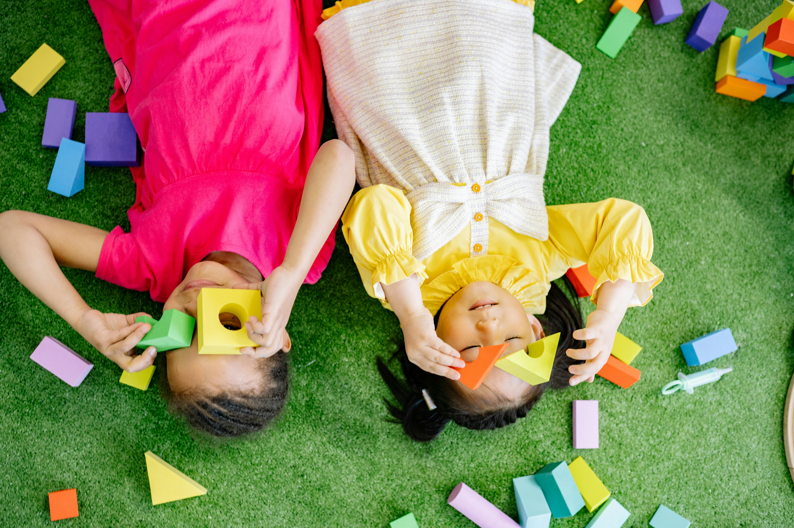
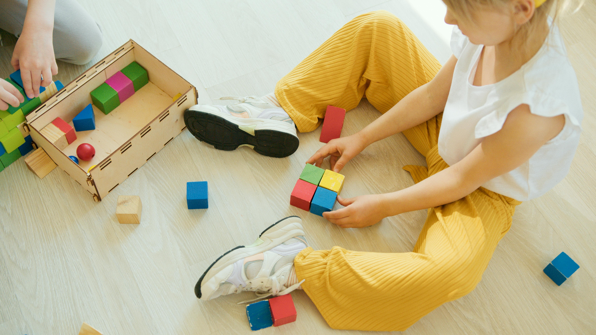
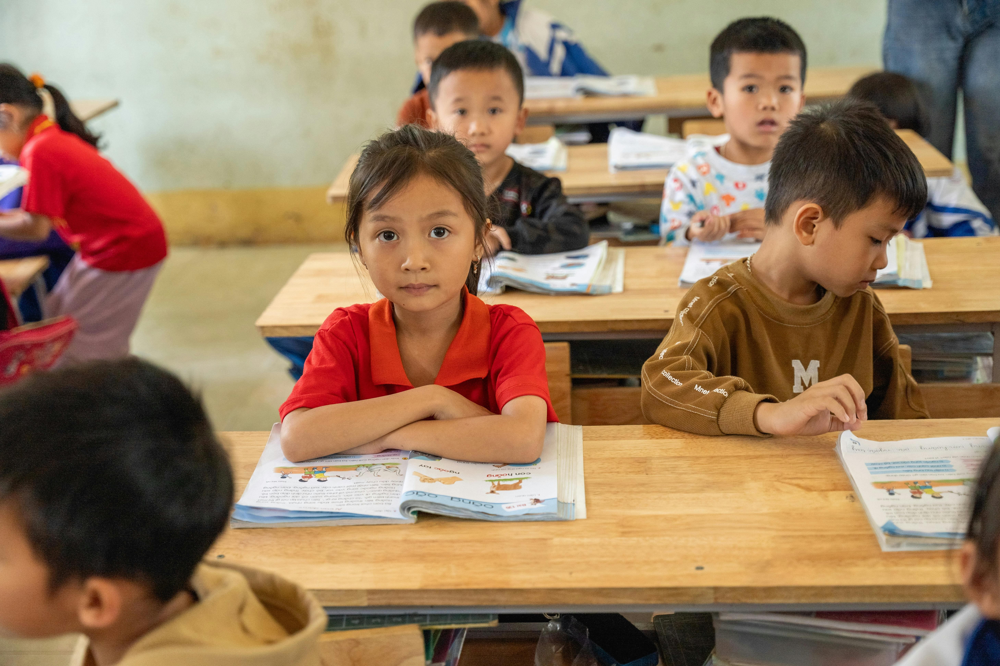
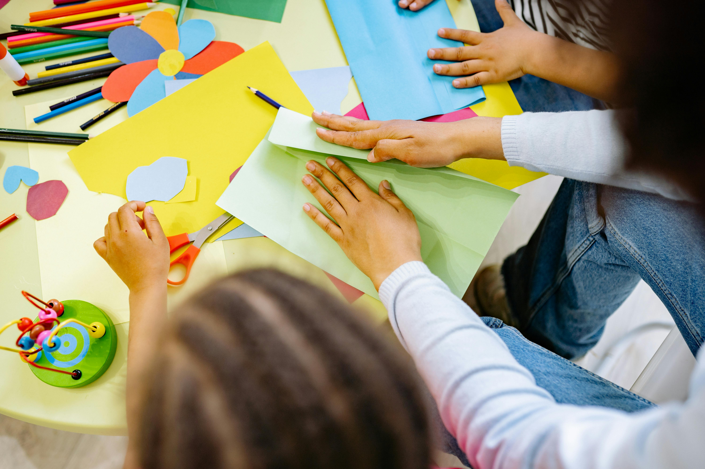
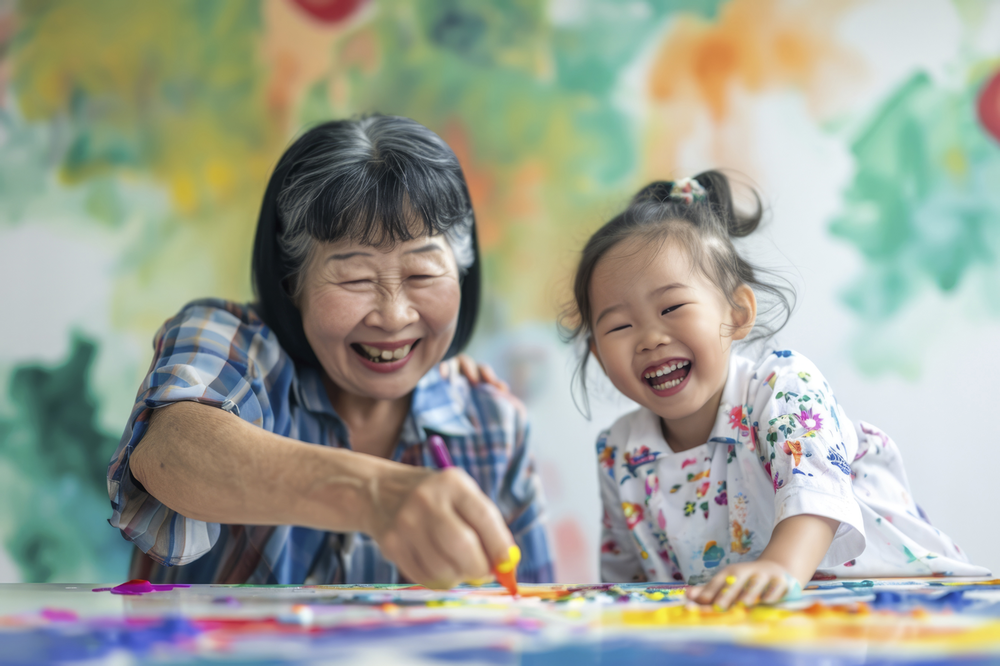
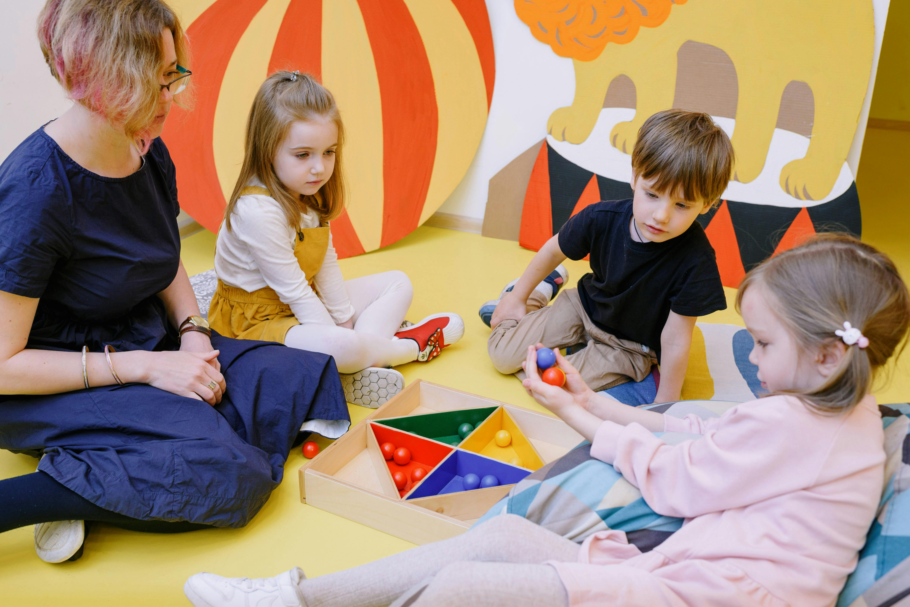

Welcome to our Gallery! Here, we celebrate the vibrant and creative spirit of our kindergarten through a collection of photos that capture the daily joys and learning experiences of our young learners. From colorful art projects and exciting classroom activities to outdoor adventures and group interactions, our gallery showcases the moments that make each day special. Our dedicated teachers foster an environment where curiosity and imagination thrive, and these images reflect the warmth and enthusiasm that define our community.
Explore the heart of our kindergarten through these images, which highlight the engaging and dynamic experiences we offer. Whether it's discovering new things, collaborating with friends, or simply having fun, every photo tells a story of growth, friendship, and discovery. We invite you to take a closer look and get a glimpse into the nurturing and inspiring environment where your child will learn, play, and grow.
A 4-year-old child enjoying lunch with friends.Art project: A close-up of a child using stencils and crayons to create art.

Happy moments: Tiny Tots kids taking a fun selfie together.Outdoor fun: Kindergarten students enjoying their outdoor playtime.Exploring nature: Children learn about nature during an outdoor class.

Building teamwork: Kids working together on a group activity.

Creative expression: Children engaged in a creative arts session.
Diving into imagination: A fun underwater-themed classroom activity.Learning through play: Kids enjoying a pretend play session about the ocean.Celebrating a special event: Tiny Tots dressed up for a mini celebration.Outdoor adventures: Children exploring the wonders of nature.

Nature’s wonders: Kids investigating rocks and textures outdoors.

Underwater adventure: A playful classroom activity focused on sea creatures.
A mini wedding celebration: Kids playing dress-up for a pretend wedding.Exploring textures: Children learning about different rock types.Fun in nature: Tiny Tots enjoying the outdoors near a waterfall.

Building creativity: Kids working together to build structures with blocks.Nature exploration: Children collecting leaves and exploring the natural world.Story time: Children engaged in an exciting story session with their teacher.Learning through art: Kids displaying their colorful artwork.
Underwater adventure: Children playing with ocean-themed toys.Learning about sea life: Kids discovering sea creatures in their classroom.Teamwork: Kids working together on a group art project.Adventurous spirit: Tiny Tots exploring the outdoors with curiosity.Discovering nature: Children examining different rocks during an outdoor lesson.Fun and learning: Kids enjoying an underwater-themed activity.